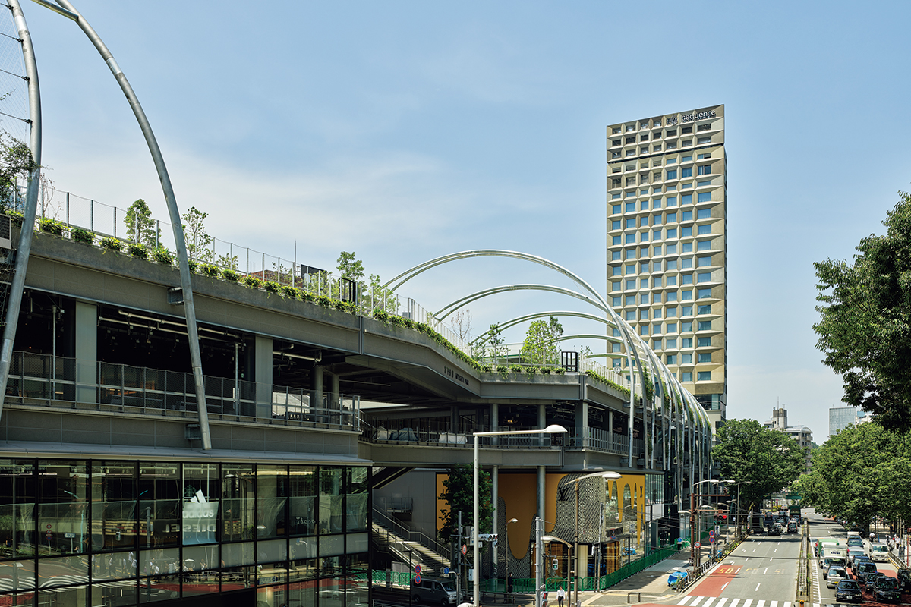
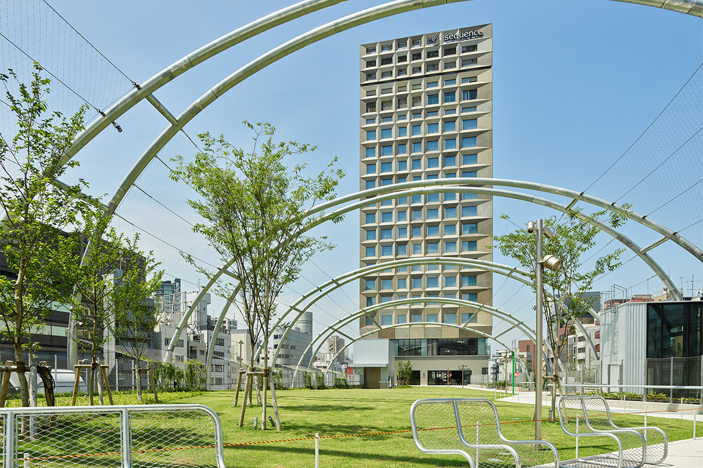
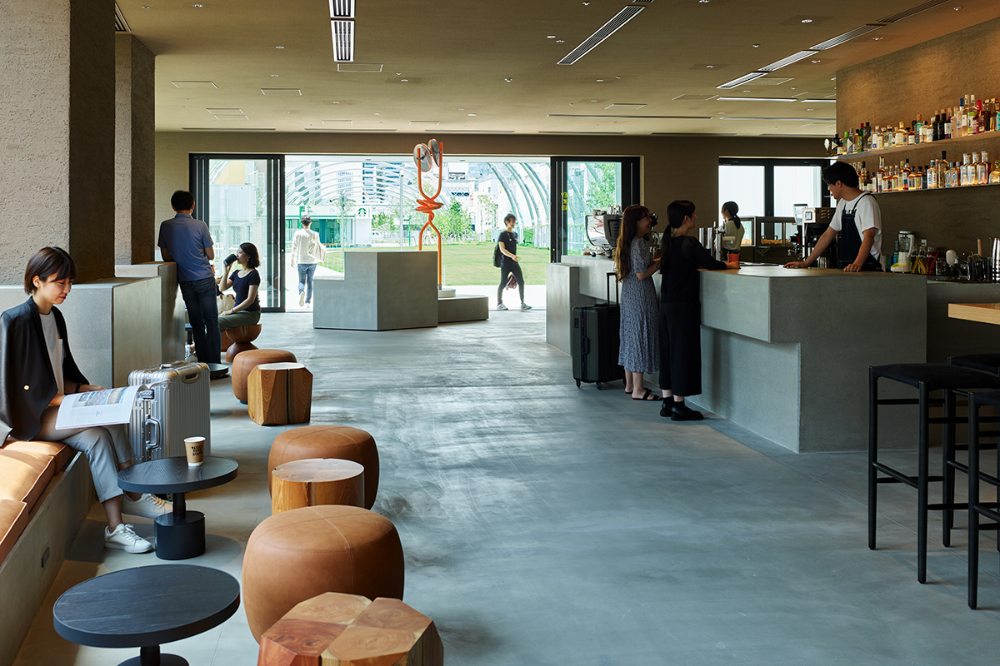
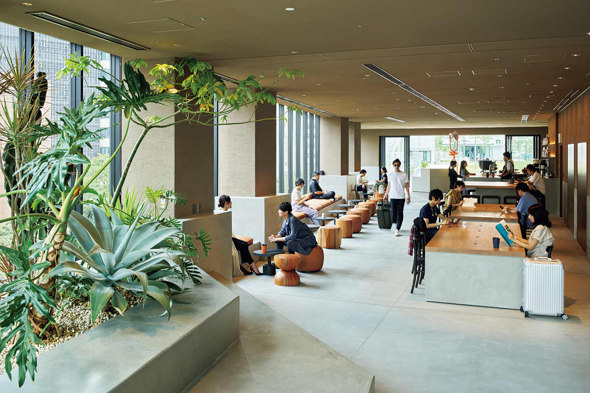
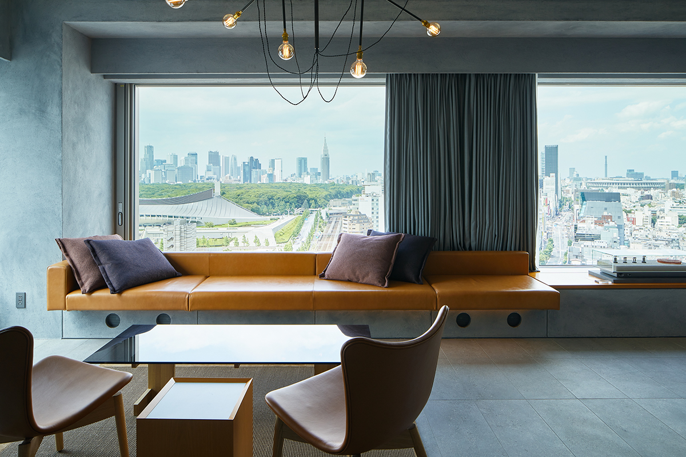
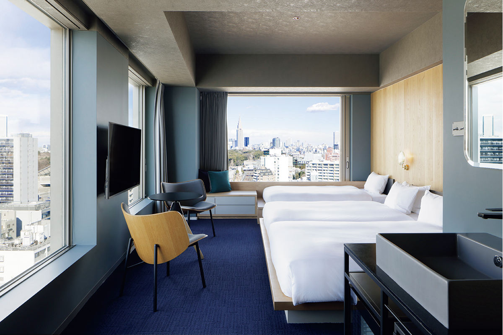
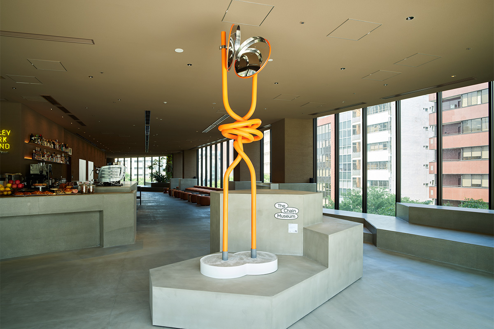
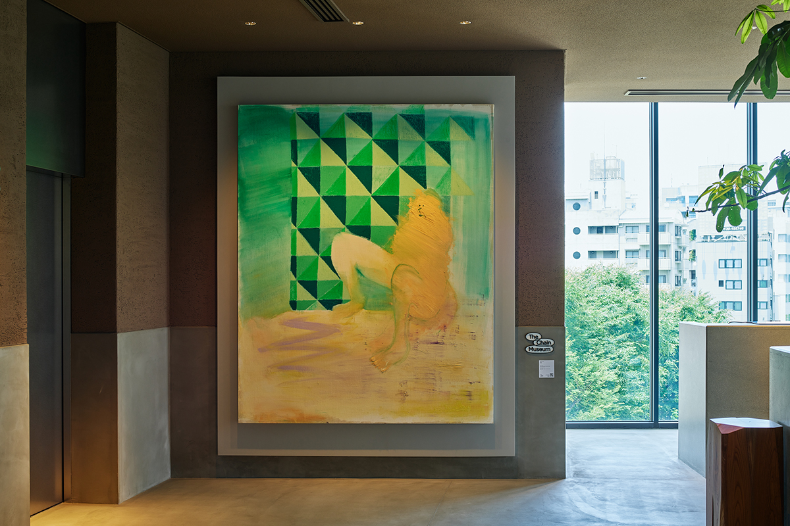
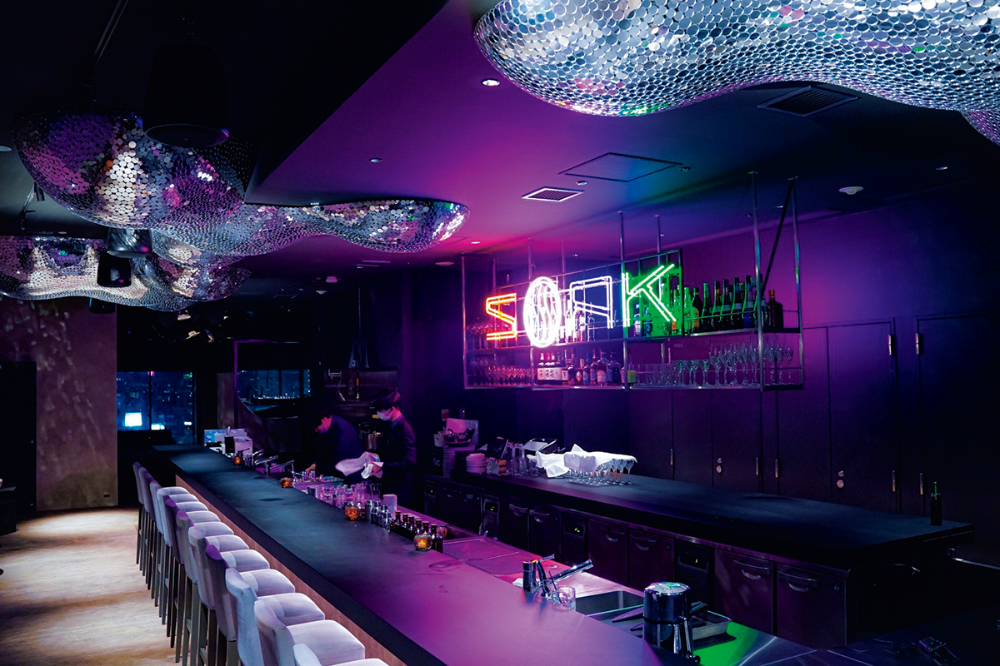

Токио · Сибуя · гостиница
sequence MIYASHITA PARK: гостиница, которая начинается прямо в парке Сибуи

В Сибуе есть гостиница, в которую входят прямо из городского парка. Её лобби открыто всем, в номерах и залах выставлено искусство, а на крыше работает бар с видом на Сибую.
Концепция
Парк, магазины и гостиница под одной крышей
Название sequence значит «последовательность» или «цепочка», и в этом весь замысел сети гостиниц компании Mitsui Fudosan: помочь гостю легко и ненавязчиво найти связь с людьми, местом и культурой вокруг. Сеть держится на трёх идеях: удобные технологии, открытость и культура. Гостиницы делают вместе с творческими людьми из разных областей, а общение с гостем упрощают современные технологии.
Одна из гостиниц сети стоит в Сибуе, внутри MIYASHITA PARK. Так называется обновлённый районный парк Миясита, который стал новой площадкой для культурной жизни Сибуи. Парк, торговый центр и гостиница здесь соединены в одно целое. Местную идею гостиницы называют PARK MIND: здесь должно быть так же легко и спокойно, как в парке, где люди расслабляются и сами начинают разговаривать друг с другом.

Лобби
Кафе, открытое для всей Сибуи
Из парка в гостиницу попадаешь без всякой границы: дорожка переходит прямо во входной этаж. Здесь одновременно лобби-лаунж гостиницы и кафе-бар. Зайти сюда может кто угодно, и этаж работает как центр для гостей города: за соседними столами сидят постояльцы и прохожие, туристы и жители окрестных кварталов.


Номера
«Токийская комната» с большими окнами
Номера здесь задуманы как «токийская комната, полная чувства», и главное в них большие окна. Из них открывается широкий вид на город, и кажется, что живёшь не над Сибуей, а вместе с ней. Всего в гостинице 240 номеров. Заезд в 17:00, выезд в 14:00. На завтрак в 2025 году предлагали одно из восьми основных блюд на выбор и небольшой шведский стол.


Ночь с завтраком в 2025 году стоила 36 000 иен с налогом и сервисным сбором, в 2022 году цены начинались от 13 330 иен. По сведениям сайта гостиницы на 2026 год, парк закрыт с 23:00 до 8:00, и в эти часы постояльцы поднимаются на 4-й этаж на отдельном лифте с 1-го этажа северной части комплекса.
Искусство
Маленький музей в гостинице
Искусство встречается здесь на каждом шагу: во входной зоне, в каждом номере и по всему зданию. Гостиница называет себя маленьким музеем, который собирают вместе с художниками, чтобы связать искусство с миром и с людьми. Общая тема коллекции звучит как вопрос: становится ли искусством всё, что поставлено на пьедестал, или оно им уже является? Рядом с работами есть QR-коды: по ним можно узнать об авторе и связаться с ним, так что зритель тоже участвует в выставке.


Крыша
SOAK на 18-м этаже
На последнем, 18-м этаже работает SOAK. В нём ресторан, куда пускают только по брони, бар, куда можно прийти без брони, и терраса на крыше OYU, где можно поплескаться в воде. Отсюда видна вся Сибуя.

sequence MIYASHITA PARK
- Адрес
- Токио, Сибуя, Дзингумаэ, 6-20-10, MIYASHITA PARK North
- Телефон
- +81 3-5468-6131
- Номера
- 240
- Цены / Вход
- ночь с завтраком 36 000 иен (с налогом и сервисным сбором)
- Заезд / выезд
- 17:00 / 14:00
- Как добраться
- около 3 минут пешком от станции метро Сибуя (Tokyo Metro), около 7 минут от станции JR Сибуя, около 8 минут от станции метро Мэйдзи-дзингумаэ (Харадзюку)